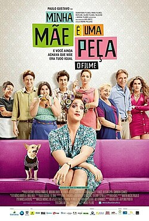

O Auto da Compadecida

O Auto da Compadecida é um filme brasileiro de comédia dramática, lançado em 2000, dirigido por Guel Arraes, com roteiro de Adriana Falcão, João Falcão e do próprio Arraes, e baseado na peça teatral Auto da Compadecida de 1955 de Ariano Suassuna.
Minha Irmã e Eu
As irmãs Mirian e Mirelly nasceram em Rio Verde, no interior de Goiás. Elas não realizaram o sonho da mãe, Dona Márcia, de se tornarem uma dupla sertaneja. Além das irmãs terem seguido caminhos opostos, elas vivem às turras. A mãe delas desaparece e as duas deixam de lado as diferenças e se unem para procurá-la em uma viagem que pode mudar suas vidas.
Férias Trocadas

Pai de família e pão duro, Zé ganha uma rifa e consegue uma viagem para toda sua família até Cartagena. Edu é um empresário preconceituoso que vai para o mesmo destino que Zé. Chegando lá, ambos os homens acabam indo para endereços errados e um troca de família com o outro: Zé acaba indo para o resort cinco estrelas de Edu, e Edu vai parar na pousada barata de Zé
Barraco de Família

A funkeira Kellen é cancelada por causa de um vídeo onde ela é vista destratando seus fãs. Reflexiva e no fundo do poço, ela decide voltar às suas origens e conta com o apoio de sua família para dar a volta por cima.
O Amor é Cego

A história gira em torno de Hal, que aceitou o conselho de seu pai moribundo e namora apenas as formas da perfeição física feminina. Porém tudo muda após Hal ter um encontro inesperado com um guru, Tony Robbins. Intrigado pela superficialidade de Hal, Robbins o hipnotiza para que ele veja a beleza que existe mesmo em mulheres menos atraentes fisicamente.
Minha Mãe é Uma Peça

Dona Hermínia é uma senhora de meia-idade, divorciada do marido, que a trocou por uma mulher mais jovem. Hiperativa, ela não larga do pé de seus filhos, Marcelina e Juliano. Um dia, após descobrir que eles a consideram chata, ela resolve sair de casa sem avisar ninguém, deixando todos preocupados. Dona Hermínia decide visitar a querida tia Zélia para desabafar suas tristezas atuais e recordar os bons tempos do passado.